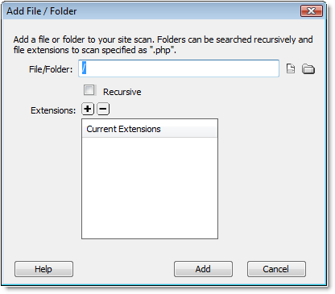

Adding Files/Folders
You can add any files or folders that are associated with the framework you are working with. You will then want to specify the file extensions to be scanned for code hints.
- From the Site-Specific Code Hints dialog, choose the Add icon to load the Add File/Folder dialog.
- From the File/Folder field, do one of the following:
- Enter the relative path to the file/folder you wish to be added.
- Choose the file icon to browse for the desired file you wish to add.
- Choose the folder icon to browse for the desired folder you wish to add.
- Choose the Add icon to specify any file extensions you wish to be scanned.
- Click Add to have this file/folder added to your site structure.
